← Index · ← Previous · Next →
Authors: Chenfeng Cao
Type: theory · Category: quantum information and computing · PDF: https://arxiv.org/pdf/2605.22603v1
Analysis basis: full PDF text, analyzed in chunks
Topic relevance: 🔥 entanglement & information structure 4/5 · methods for driven-dissipative 2/5 · non-equilibrium dynamics 2/5
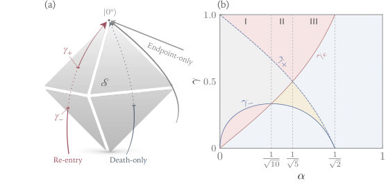
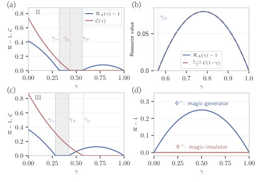
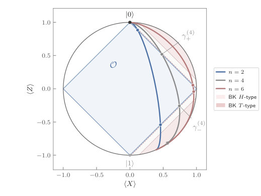
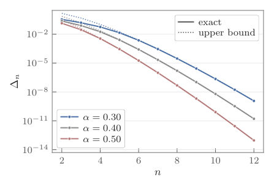
Summary. This paper demonstrates that local amplitude damping can cause the 'sudden death' and subsequent 'rebirth' of magic in quantum states, even after entanglement has been lost. It reveals a fundamental symmetry between entanglement death and magic rebirth and provides a classification of stabilizer states based on their ability to generate magic under noise.
Why it may be interesting. It provides deep insights into the resource theory of magic and the non-intuitive behavior of quantum resources in open quantum systems, specifically how dissipation can act as a resource for generating non-stabilizer states.
Main problem. Investigating the dynamics of entanglement and magic (non-stabilizerness) under local Markovian amplitude damping, specifically focusing on the phenomenon of magic rebirth after entanglement death.
Main result. The paper establishes that while entanglement is irreversibly lost under amplitude damping, magic can be 'reborn' after an initial period of disappearance, following a complementarity relation gamma_e + gamma_+ = 1. It also classifies stabilizer states into magic-generators and magic-insulators based on their Hamming-weight support.
Method. Analytical approach using Kraus operators, Stinespring dilation, and the stabilizer polytope framework, combined with mathematical tools like partial transposition and combinatorial enumeration.
Model / system. n-qubit systems, specifically the GHZ-type family and Bell states, subject to local Markovian amplitude damping channels.
Key observables. Magic robustness (R), concurrence (C), entanglement negativity, and stabilizer polytope membership.
Important parameters / regimes. Damping strength (gamma), number of qubits (n), initial state amplitude ratio (alpha/beta), and phase-twist angle (phi).
Assumptions / limitations. The noise model is restricted to local Markovian amplitude damping (non-unital) and certain phase-covariant channels.
Figures summary. Schematic of trajectories in the stabilizer polytope; plots of magic-entanglement complementarity; visualization of the super-exponential decay of the stabilizer window width; and threshold deformation as a function of phase.
Paper structure. The paper introduces the problem of magic vs. entanglement dynamics, analyzes the GHZ-X manifold under amplitude damping, establishes the complementarity relation, classifies stabilizer states into generators and insulators, and explores the asymptotic behavior and phase-twist effects.
Local Markovian noise cannot bring entanglement back, but it can bring magic back. Unlike separability, stabilizer membership is not preserved by local channels, allowing dissipation to push states out of the stabilizer polytope as well as in. Under local amplitude damping, the $n$-qubit GHZ family $α|0^n\rangle+β|1^n\rangle$ ($0<α<β$) loses its magic at a lower damping strength $γ_-$ and regains it at a higher one $γ_+$, while entanglement is irreversibly lost at $γ_e$. This magic-entanglement complementarity, $γ_e+γ_+=1$ for every $n$, reflects a system-environment duality of amplitude damping and persists for a broader class of dissipative channels. For small $α$, the reborn magic resides in a fully separable state with all proper marginals stabilizer, yet parity-syndrome extraction concentrates it onto a single qubit for magic-state distillation. Local dissipation further divides pure stabilizer states into magic-generators and magic-insulators: at two qubits, the Bell state $|Φ^+\rangle$ generates magic immediately, while its Bell-state partner $|Ψ^+\rangle$ remains stabilizer. Together, magic and entanglement reveal a symmetry invisible to either alone.
Authors: Farah Elnakhal, Alberto Marchisio, Nouhaila Innan, Gabriel Falcao, Muhammad Shafique
Type: both · Category: quantum information and computing · PDF: https://arxiv.org/pdf/2605.22097v1
Analysis basis: full PDF text, analyzed in chunks
Topic relevance: 🔥 QC/QI experiment 4/5 · quantum optics experiment 3/5
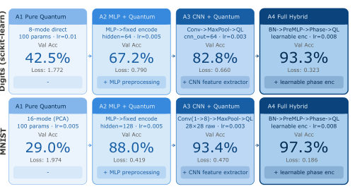
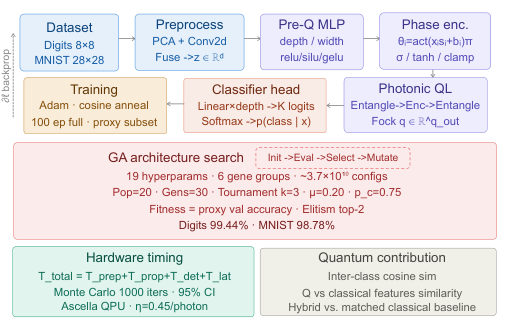
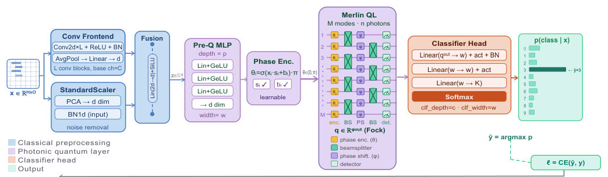
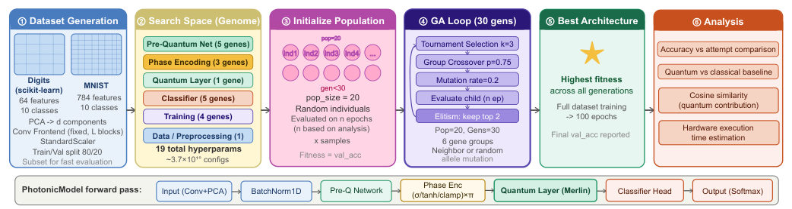
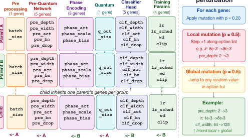
Summary. The paper introduces Q-PhotoNAS, an automated framework for searching the optimal architecture of hybrid photonic quantum-classical neural networks. By using a genetic algorithm to jointly optimize classical and quantum components, the authors achieve state-of-the-art accuracy on image classification tasks. The study also quantifies the hardware-specific latency and the unique feature-extraction capabilities of the photonic layer.
Why it may be interesting. It presents an automated approach to optimizing variational quantum circuits on specific photonic hardware, specifically addressing the synergy between classical preprocessing and quantum phase encoding.
Main problem. Designing effective hybrid photonic quantum-classical architectures is challenging due to a massive, interdependent design space involving classical preprocessing, quantum phase encoding, and photonic circuit structure.
Main result. The Q-PhotoNAS framework achieves high validation accuracies (99.44% on Digits, 99.78% on MNIST) and demonstrates that the photonic layer extracts non-redundant, complementary features to the classical pathway.
Method. A Neural Architecture Search (NAS) framework using a Genetic Algorithm (GA) to evolve 19 hyperparameters across six gene groups, combined with a learnable quantum phase encoding mechanism.
Model / system. A hybrid quantum-classical neural network targeting the Quandela Ascella photonic QPU, utilizing a 12-mode silicon nitride chip with thermo-optic phase shifters, directional couplers, and superconducting nanowire single-photon detectors.
Key observables. Photon-number probability vectors in the Fock basis, validation accuracy, inter-class cosine similarity, and hardware-estimated inference latency.
Important parameters / regimes. 19 hyperparameters including network depth/width, phase encoding scale and bias, learning rate, and 12-mode photonic circuit configuration.
Assumptions / limitations. The evaluation is primarily simulation-based using the Merlin backend; hardware latency estimates assume specific thermal-optic reconfiguration costs and photon loss rates.
Figures summary. Figure 1 shows the motivation for NAS via architecture complexity; Figure 2/3/5 illustrate the hybrid model pipeline and flow; Figure 4/7/8/9 detail the Q-PhotoNAS GA framework, including crossover and mutation; Figure 10 shows the hardware latency model.
Paper structure. The paper introduces the design challenge, describes the Q-PhotoNAS GA-based framework and learnable encoding, details the experimental setup/simulation, presents performance results on MNIST/Digits, performs quantum contribution analysis, and concludes with hardware latency estimations.
Photonic quantum computing is a promising platform for scalable quantum machine learning, but designing effective hybrid architectures remains challenging under hardware and optimization constraints. Existing approaches rely on manually tuned architectures that fail to account for the collaboration between classical preprocessing, phase encoding, and photonic circuit structure, limiting both accuracy and hardware compatibility. In this paper, we propose a neural architecture search framework for hybrid photonic quantum-classical models that combines genetic algorithm-based search with learnable quantum phase encoding to systematically explore the joint design space of classical and quantum components. Our framework encodes 19 hyperparameters across six gene groups and evolves a population of hybrid architectures using group-based crossover, per-gene mutation, and elitism, evaluating each candidate on a short training budget before full retraining of the best found design. We evaluate our framework on two image classification benchmarks, Digits and MNIST, achieving final validation accuracies of 99.44% and 98.78%, respectively, with first-principles execution time estimates on the Quandela Ascella photonic QPU projecting single-image inference at 67 ms (Digits) and 149 ms (MNIST). Our quantum contribution analysis further shows that the photonic layer extracts non-redundant features orthogonal to the classical pathway, providing a measurable accuracy advantage over classical-only baselines. Our results demonstrate that automated architecture search is both practical and impactful for hybrid photonic systems, opening the way for systematic design space exploration of quantum AI on photonic devices.
Authors: Junpeng She, Ruoyu Yan, Zhizhen Qin, Zhanyu Li, Zhongtao Shen, Zichao Zhou, Binxiang Qi, Luming Duan
Type: both · Category: other · PDF: https://arxiv.org/pdf/2605.22433v1
Analysis basis: full PDF text, analyzed in chunks
Topic relevance: 🔥 QC/QI experiment 4/5 · quantum measurements 3/5
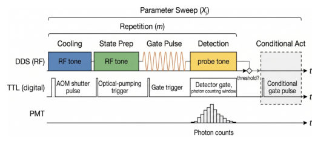
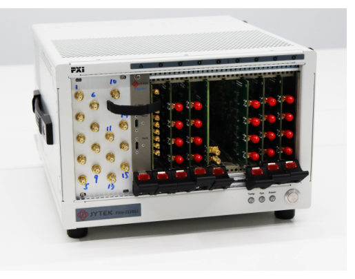
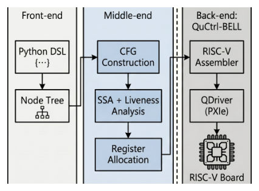
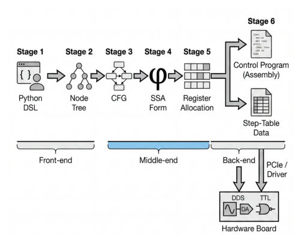
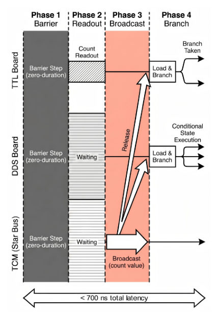
Summary. The paper presents QuCtrl-BELL, a new compiler-driven software stack designed for scalable trapped-ion quantum control. By separating control logic from hardware parameters, it enables sub-700 ns feedback loops and efficient parameter sweeps. This architecture bridges the gap between user-friendly Python programming and the strict timing requirements of large-scale quantum experiments.
Why it may be interesting. This is highly relevant for AMO physicists as it provides the necessary classical control infrastructure for implementing complex, real-time feedback protocols essential for scalable trapped-ion gates and quantum error correction.
Main problem. The challenge of scaling trapped-ion quantum computing requires a control system that provides both high-level software programmability and sub-microsecond, deterministic hardware feedback latency.
Main result. The QuCtrl-BELL stack achieves sub-700 ns end-to-end feedback latency by decoupling control flow from hardware state data, significantly reducing data transfer and memory pressure.
Method. A compiler-driven approach using a Python-embedded DSL that employs a six-stage transpilation pipeline (including CFG, SSA, and register allocation) to separate instruction streams from hardware step-tables.
Model / system. A distributed control platform for trapped-ion quantum computing based on a 9-slot PXIe chassis, featuring RISC-V processors, DDS/AWG boards, and a Trigger & Clock Manager (TCM) for star-topology synchronization.
Key observables. Feedback latency (measured at 690 ns), execution queue timing resolution (4 ns), and step-table compactness.
Important parameters / regimes. Sub-microsecond feedback threshold (<700 ns), 4 ns clock resolution, and 100 ns hardware broadcast delay.
Assumptions / limitations. The 700 ns synchronization overhead per readout event may limit throughput for high-frequency multi-round error correction; camera-based detection is not yet integrated into the compiler.
Figures summary. Figure 1 shows a standard trapped-ion experiment sequence; Figure 2 depicts the PXIe hardware architecture; Figure 3 and 4 detail the software architecture and compilation pipeline; Figure 5 illustrates the synchronization protocol; Figure 6 provides an oscilloscope trace confirming the 690 ns feedback latency.
Paper structure. The paper introduces the control tradeoff problem, describes the QuCtrl-BELL hardware and software architecture, details the six-stage compilation pipeline, presents performance evaluations regarding latency and memory efficiency, and concludes with future work.
As trapped-ion quantum computing scales to larger qubit registers and more complex control protocols, classical control systems face a fundamental tradeoff: sub-microsecond board-level feedback requires tight hardware coupling, whereas maintainability and extensibility require clean, modular software abstractions. This paper presents QuCtrl-BELL (Bell), a compiler-driven software stack for trapped-ion quantum control. The design resolves this tradeoff by decoupling control flow -- including loops, branches, and synchronization -- from hardware state data. A Python-embedded domain-specific language (DSL) is lowered through a six-stage transpilation pipeline covering control flow graph (CFG) construction, static single-assignment (SSA) conversion, liveness analysis, and graph-coloring register allocation. The compiler generates deterministic distributed board-level programs and compact step-table data. A cross-board synchronization protocol supports feedback loops with latency below 700~ns without host intervention. Bell is deployed and evaluated on the QuCtrl-BELL platform (RISC-V + PXIe), demonstrating that a compiler-based infrastructure can provide programmability, deterministic timing, and modularity for scalable trapped-ion quantum control.
Authors: Barbara Jasser, Daniele Iannotti, Alioscia Hamma
Type: theory · Category: quantum information and computing · PDF: https://arxiv.org/pdf/2605.21664v1
Analysis basis: full PDF text, analyzed in chunks
Topic relevance: 🔥 entanglement & information structure 4/5 · non-equilibrium dynamics 2/5
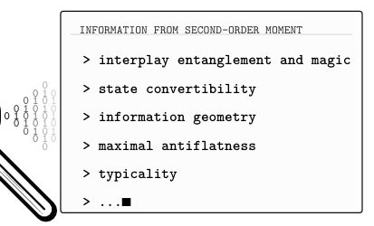
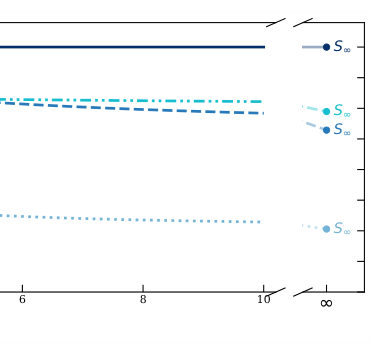
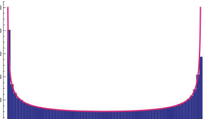
Summary. The paper introduces a new framework to study the 'antiflatness' of quantum entanglement spectra, focusing on the fluctuations of eigenvalues rather than just their average. It establishes a new partial ordering for quantum states and proves that maximal spectral deviation is achieved by a specific class of 'jump' spectra. This provides a deeper tool for characterizing quantum correlations and resource theories.
Why it may be interesting. This is highly relevant for many-body dynamics and open quantum systems as it provides a new way to quantify the 'richness' of entanglement beyond simple entropy, specifically looking at how the internal structure of the entanglement spectrum evolves.
Main problem. The paper aims to characterize the structural fluctuations within the entanglement spectrum of a quantum state by moving beyond standard average measures like purity or von Neumann entropy.
Main result. The authors introduce 'antiflatness' as a measure of spectral inhomogeneity and develop a new partial ordering called 'antiflat majorization' based on the Rényi entropy spread. They also identify a continuous Pareto frontier of extremal states that achieve maximal antiflatness.
Method. The study employs information geometry (escort distributions and Bregman divergences), mathematical proofs involving Lagrange multipliers and Zorn's Lemma, and statistical analysis of Haar, Bures-Hall, and t-doped Clifford random state ensembles.
Model / system. The framework focuses on bipartite quantum systems with reduced density operators, considering various random state ensembles and contexts such as topological order and many-body localization.
Key observables. Entanglement spectrum, Rényi entropy spread, Capacity of Entanglement, Linear Rényi spread, and Logarithmic antiflatness.
Important parameters / regimes. Rényi parameter (alpha), purity (Tr[rho^2]), dimension of the Hilbert space (dA), and the weight of the largest eigenvalue (r_max).
Assumptions / limitations. The study assumes bipartite structures and focuses on the properties of the reduced density matrix; it notes that standard majorization is structurally blind to the spectral fluctuations being studied.
Figures summary. Figure 1 illustrates different eigenvalue profiles (flat, decaying, and maximal antiflat) and summarizes information extractable from the second-order moment of the spectrum; Figure 2 shows Rényi entropy curves for different states.
Paper structure. The paper begins by defining antiflatness and the new partial ordering, moves to establishing the mathematical properties of the ordering and flatness-preserving operations, explores the geometric structure of the accessible antiflatness volume, and concludes with the identification of maximal antiflatness states and their statistical properties.
We explore the concept of antiflatness to characterize the structural fluctuations within the entanglement spectrum of a quantum state (i.e., the spectrum of its reduced density operator). As a measure of the interplay between entanglement and magic, two fundamental quantum resources, antiflatness provides second-order information about quantum correlations that standard average measures fail to capture. Recognizing that standard majorization theory fundamentally orders states by purity and is structurally blind to spectral fluctuations, we introduce a novel partial ordering known as antiflat majorization, based on the Rényi entropy spread. We define Flatness-Preserving Operations (FPOs), establishing new necessary conditions for state convertibility. Furthermore, we unify different measures of antiflatness-such as Capacity of Entanglement, Linear Rényi spread, and Logarithmic antiflatness-using the frameworks of escort distributions and Bregman divergences. We prove that the Capacity of Entanglement can be expressed as a second derivative of the Kullback-Leibler divergence along the escort trajectory, connecting it with the Quantum Fisher Information. Finally, we demonstrate that absolute maximal antiflatness is not achieved by a single universal state, but rather by a continuous Pareto frontier of extremal states with jump spectra, and we analyze the typicality of these spectral fluctuations using Haar, Bures-Hall and t-doped Clifford random state ensembles.
Authors: Thomas K. Bracht, Moritz Cygorek
Type: theory · Category: numerical methods · PDF: https://arxiv.org/pdf/2605.22386v1
Analysis basis: full PDF text, analyzed in chunks
Topic relevance: 🔥 methods for driven-dissipative 4/5 · non-equilibrium dynamics 2/5
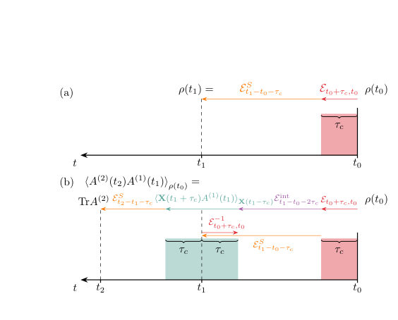
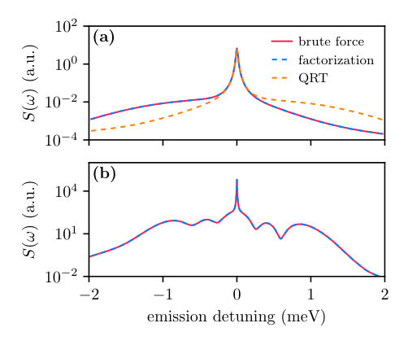
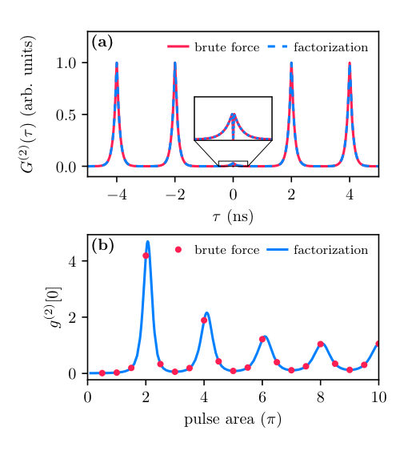
Summary. This paper presents a new exact factorization rule for calculating multitime correlation functions in non-Markovian systems. By breaking down complex n-time correlations into simpler lower-order parts, the method achieves massive computational speed-ups without sacrificing accuracy. This is particularly useful for studying the optical properties of quantum dots coupled to phonon environments.
Why it may be interesting. It provides a powerful computational shortcut for simulating complex non-Markovian dynamics, allowing for the efficient calculation of high-order correlations and spectra that were previously too expensive to compute.
Main problem. Calculating multitime correlation functions in non-Markovian open quantum systems is computationally expensive because the breakdown of the Quantum Regression Theorem (QRT) requires long-time, brute-force simulations.
Main result. The authors derive an exact factorization rule that decomposes n-th order correlations into products of lower-order correlations, providing a speed-up of two to three orders of magnitude while maintaining exact accuracy.
Method. The method uses an eigenvector decomposition of the stationary dynamical map within a Markovian embedding framework to decouple time steps.
Model / system. The study focuses on non-Markovian open quantum systems with time-independent Hamiltonians and finite memory times, specifically using semiconductor quantum dots coupled to a super-Ohmic phonon bath as a primary example.
Key observables. Multitime correlation functions, emission spectra S(omega), second-order coherence G(2)(t, tau), and integrated second-order coherence g(2)[0].
Important parameters / regimes. Memory time (tau_c), phonon dynamics (picosecond scale), radiative decay (nanosecond scale), and temperature (4 K).
Assumptions / limitations. The Hamiltonian is time-independent, the initial system-environment state is an uncorrelated product, and the environment has a finite memory time.
Figures summary. Figure 1 illustrates the stationary dynamical map and the visual concept of factorization; Figure 2 compares the accuracy of the factorization method against brute-force and QRT for emission spectra; Figure 3 shows time-integrated second-order coherence.
Paper structure. The paper introduces the problem of non-Markovian correlations, derives the mathematical factorization rule using Liouvillian eigenbasis decomposition, applies the method to quantum dots coupled to phonons, and validates the efficiency and accuracy against brute-force simulations.
Experiments performed on quantum systems often measure multitime correlation functions. When quantum systems are weakly coupled to their environment, the time evolution of such correlation functions can be reduced to that of the reduced density matrix by the quantum regression theorem (QRT). While no QRT is available for general non-Markovian open quantum systems, we show that for time-independent Hamiltonians and finite memory times $τ_c$, an exact factorization rule exists that relates higher-order multitime correlations to products of lower-order correlations. Consequently, all information needed to reconstruct $n$-time correlations is contained in a temporal volume of $\mathcal{O}(τ_c^n)$. On the example of quantum dots coupled to phonons, we demonstrate that this factorization makes numerical calculations of multitime correlations extremely efficient and even enables semianalytical solutions in systems where the standard QRT breaks down.
Authors: Muxi Liu
Type: theory · Category: other · PDF: https://arxiv.org/pdf/2605.22551v1
Analysis basis: full PDF text, analyzed in chunks
Topic relevance: 🔥 quantum measurements 4/5 · entanglement & information structure 2/5
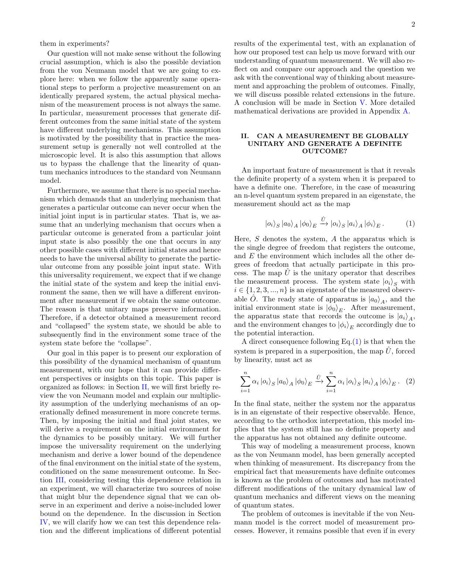
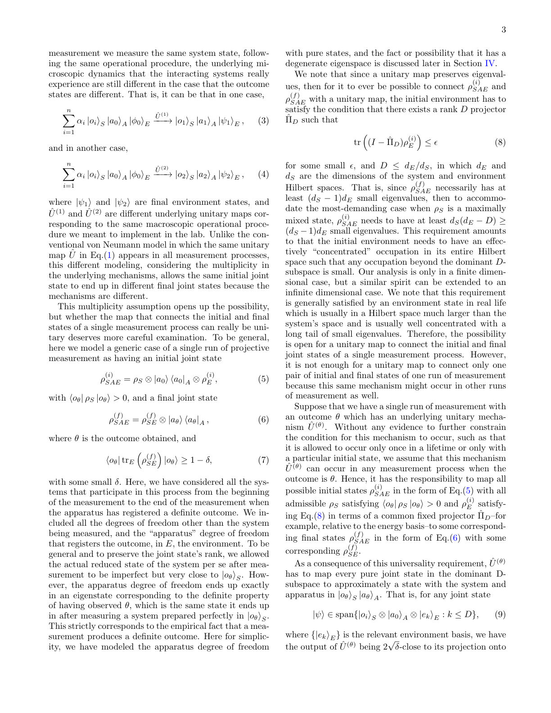
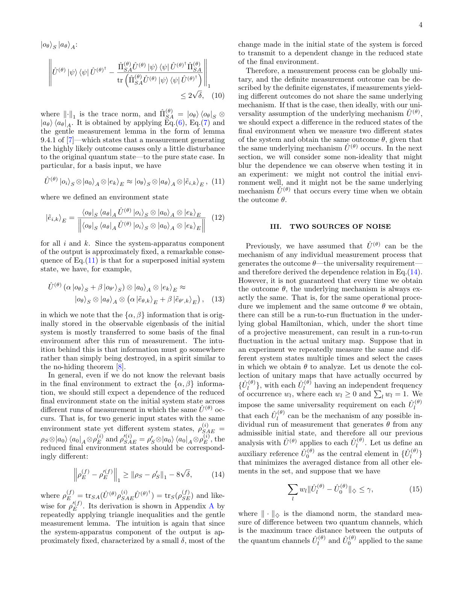
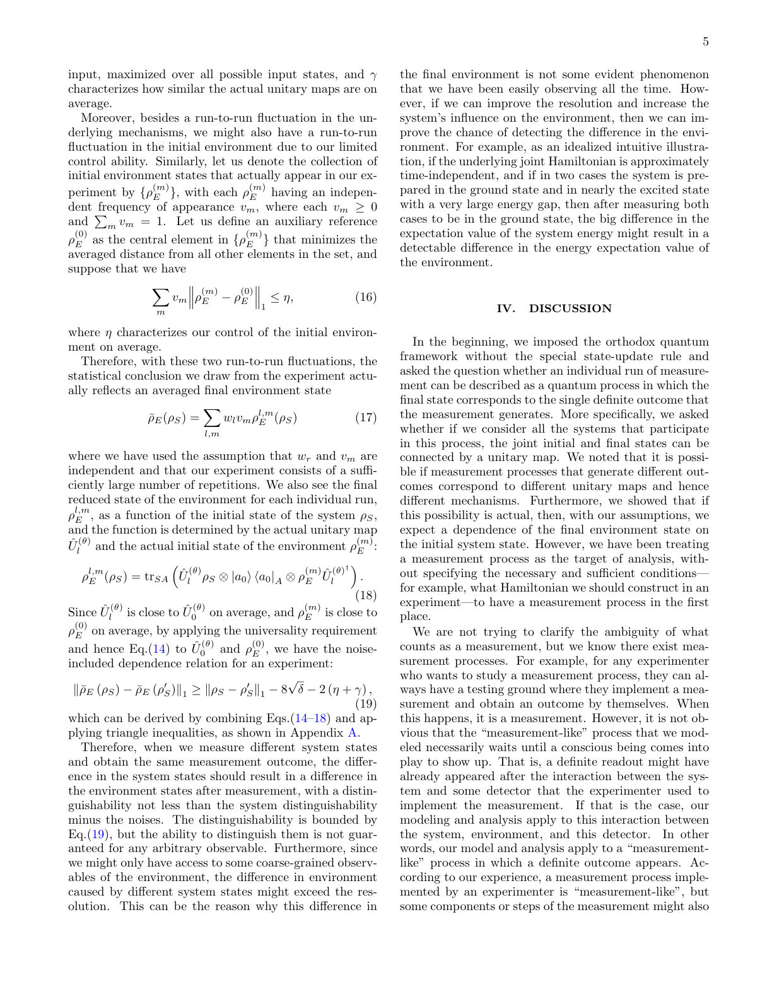
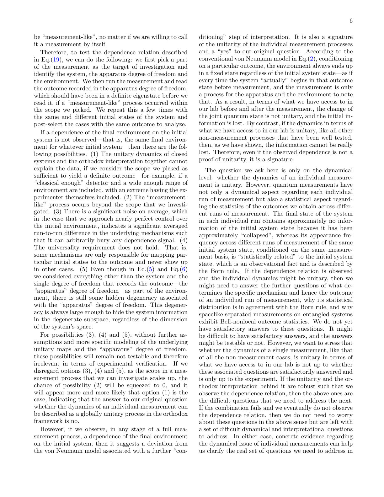
Summary. This paper investigates whether a single quantum measurement run with a definite outcome can be described by a joint unitary evolution. It establishes that if such a unitary process exists, the final state of the environment must retain a trace of the initial system state. This provides a way to experimentally test the compatibility of unitary dynamics with the emergence of definite outcomes.
Why it may be interesting. It provides a concrete, experimentally testable criterion to distinguish between the standard von Neumann/conditioning interpretation and models where individual measurement runs are fundamentally unitary.
Main problem. Resolving the discrepancy between the von Neumann measurement model, which predicts entangled states, and the empirical reality of single, definite measurement outcomes.
Main result. The author derives a lower bound on the dependence of the post-measurement environment state on the initial system state, providing an experimentally testable signature of unitary dynamics in individual measurement runs.
Method. The study uses mathematical tools such as the trace norm, diamond norm, and the gentle measurement lemma to analyze information transfer and derive bounds on state distinguishability.
Model / system. A tripartite system consisting of a measured system (S), a measurement apparatus (A), and an environment (E), where different measurement outcomes are driven by different underlying unitary maps.
Key observables. The trace distance between the reduced final states of the environment conditioned on the same measurement outcome.
Important parameters / regimes. delta (state deviation), eta (environment fluctuation), and gamma (unitary mechanism fluctuation).
Assumptions / limitations. The multiplicity assumption (different outcomes correspond to different unitaries) and the universality requirement (the mechanism for an outcome is independent of the input state).
Paper structure. The paper identifies the problem of outcomes, proposes an alternative unitary model with outcome-dependent maps, derives a mathematical lower bound for environment state dependence, and discusses experimental observability and noise limitations.
We investigated the possibility that a single measurement run with a definite outcome is a joint unitary evolution of all the participating systems, and measurement runs with different definite outcomes correspond to different unitary maps. With reasonable assumptions, we derived a lower bound of the dependence of the environment after measurement on the state of the system before measurement, conditioned on the same measurement outcome. An experimental test of this dependence relation can either serve as evidence that the unitary dynamics and the definite outcome in the orthodox sense cannot be true together or suggest a deviation from the von Neumann measurement model plus a "conditioning" interpretational step.
Authors: Qing-Hong Cao, Yandong Liu, Haotian Qi, Hao Zhang, Haoran Zhao
Type: theory · Category: quantum information and computing · PDF: https://arxiv.org/pdf/2605.22070v1
Analysis basis: full PDF text, analyzed in chunks
Topic relevance: 🔥 entanglement & information structure 4/5 · quantum measurements 2/5
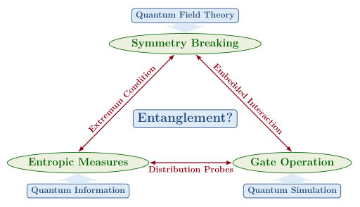
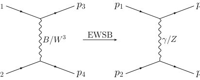
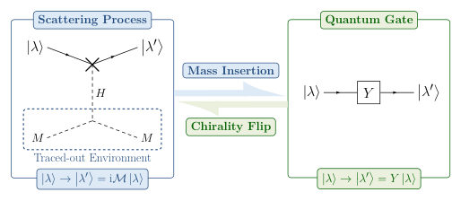
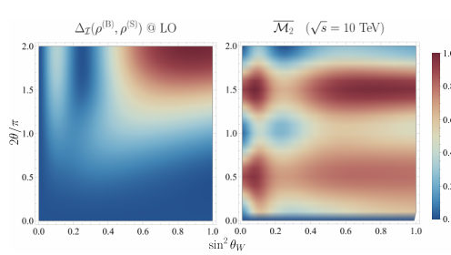
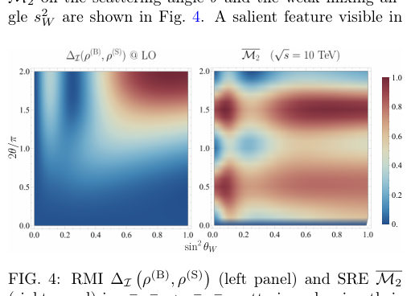
Summary. This paper demonstrates that the variation in Rényi mutual information and stabilizer Rényi entropy in electroweak scattering follows the same dependence on the weak mixing angle. This shared behavior is explained by treating the Yukawa mass insertion as a quantum gate in chirality space. The results suggest that entropic measures can serve as a diagnostic tool for the chiral structure of particle interactions.
Why it may be interesting. It provides a novel bridge between high-energy particle physics and quantum information theory by interpreting fundamental symmetry breaking as a specific quantum gate operation acting on chirality space.
Main problem. The paper investigates the relationship between electroweak symmetry breaking (EWSB) and quantum information theoretic measures, specifically looking for a correspondence between Rényi mutual information and stabilizer Rényi entropy.
Main result. The authors establish that RMI and SRE exhibit an identical dependence on the weak mixing angle after angular averaging, a correspondence traced to the Yukawa mass insertion acting as a -iY quantum gate in chirality space.
Method. The study uses helicity amplitude formalism, quantum state tomography to reconstruct density matrices, and angular averaging over the celestial sphere to evaluate entropic probes.
Model / system. The system consists of 2 to 2 elastic scattering processes (e.g., e- mu- to e- mu-) within the Standard Model framework, specifically focusing on neutral-current channels involving Z boson exchange across the EWSB transition.
Key observables. Rényi mutual information (RMI) in the helicity basis and stabilizer Rényi entropy (SRE) in the fixed beam basis.
Important parameters / regimes. Weak mixing angle (sin^2 theta_W), scattering angle (theta), and fermion coupling strengths (kappa_L, kappa_R); high-energy limit (sqrt(s) = 10 TeV).
Assumptions / limitations. The analysis uses the high-energy limit to isolate energy-independent contributions and assumes tree-level 2 to 2 elastic scattering.
Figures summary. Figure 1 shows a conceptual framework linking QFT and QI; Figure 2 depicts the Yukawa interaction as a quantum gate; Figure 3 illustrates the scattering process before and after EWSB; Figures 4 and 5 show the dependence of entropic measures on scattering angles and the weak mixing angle.
Paper structure. The paper introduces a unified framework for QFT and QI, describes the scattering model and the quantum gate interpretation of mass insertion, presents the calculation of entropic probes, analyzes the correspondence between RMI and SRE, and discusses the diagnostic role of these measures.
We establish a correspondence between two independent entropic probes -- the variation of Rényi mutual information (RMI) across the electroweak symmetry breaking (EWSB) transition and the stabilizer Rényi entropy (SRE) -- in tree-level $2\to 2$ elastic scatterings. After angular averaging, the RMI (helicity basis) and the SRE (fixed beam basis) exhibit identical dependence on $\sin^2θ_W$ within each neutral-current channel. We trace this correspondence to a common physical origin that it's the Yukawa mass insertion acts as a $-\mathrm{i}Y$ quantum gate in chirality space. Minimizing entropies across all processes yields $\sin^2θ_W$ values matching purely axial vector-like couplings in $Z$ boson exchanged channel.
Authors: Boyuan Shi
Type: theory · Category: numerical methods · PDF: https://arxiv.org/pdf/2605.21632v1
Analysis basis: full PDF text, analyzed in chunks
Topic relevance: 🔥 entanglement & information structure 4/5
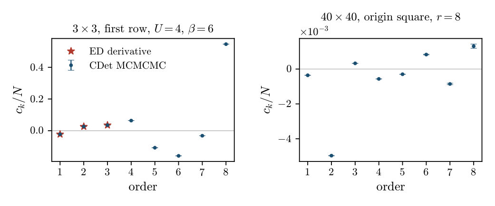
Summary. This paper introduces a new Diagrammatic Monte Carlo method to directly compute Renyi entanglement entropy in interacting fermionic systems. By using a graded-swap representation and connected-determinant sampling, the method avoids the traditional sign problem and scales to much larger lattice sizes than exact diagonalization. This provides a powerful tool for studying entanglement in complex, strongly correlated regimes.
Why it may be interesting. not directly relevant
Main problem. Developing a scalable numerical framework to calculate the Renyi entanglement entropy for interacting lattice fermions, specifically overcoming the sign problem and computational costs in 2D and finite-temperature regimes.
Main result. The authors successfully implemented a Diagrammatic Monte Carlo (DiagMC) framework that provides accurate order-by-order interaction corrections for large systems, validated against exact diagonalization for small clusters and applied to a 40x40 lattice.
Method. A direct diagrammatic Monte Carlo framework using a fermionic graded-swap representation, connected-determinant sampling (CDet), and a many-configuration Markov-chain Monte Carlo sampler.
Model / system. The repulsive Hubbard model on a square lattice with periodic boundary conditions, focusing on the entanglement of a square subregion A.
Key observables. Second Renyi entanglement entropy (S2) and its interaction-dependent coefficients.
Important parameters / regimes. Interaction strength (U), chemical potential (mu), inverse temperature (beta), and subregion size/geometry.
Assumptions / limitations. The primary computational bottleneck is memory usage rather than the conventional auxiliary-field sign problem; the method is oriented toward finite-size/finite-region calculations.
Figures summary. Figure 1 compares order-by-order CDet Monte Carlo coefficients against exact diagonalization for a 3x3 cluster and presents production results for a 40x40 lattice.
Paper structure. The paper follows a logical progression from the theoretical formulation of the graded-swap path integral to the derivation of the determinant expansion, followed by the description of the MCMC sampler, validation via benchmark, and finally large-scale production results.
We develop a direct diagrammatic Monte Carlo framework for the Renyi entanglement entropy of interacting lattice fermions. The method starts from the fermionic graded-swap representation of Z_n[A]=Tr_Aρ_A^n, which converts the entropy problem into a replicated path integral with mixed temporal boundary conditions on the entangling region. In this representation the replica momenta are half-shifted, q_m=(2m+1)π/n, and the interaction expansion has a determinant form suitable for connected-determinant summation. We combine this expansion with a many-configuration Markov-chain Monte Carlo sampler to obtain order-by-order corrections for very large systems to very high orders. As a benchmark, we compare the order-by-order coefficients of a 3*3 Hubbard cluster with exact diagonalization. We then report a production calculation for a large periodic lattice with a square subregions. The dominant system-size limitation is therefore memory rather than a conventional auxiliary-field sign problem. The results provide a step toward diagrammatic calculations of fermionic entanglement observables in regimes where direct quantum Monte Carlo sampling is costly or sign-problem limited.
Authors: David Aram Korbany, Tyler D. Ellison, David T. Stephen, Lorenzo Piroli
Type: theory · Category: quantum information and computing · PDF: https://arxiv.org/pdf/2605.22424v1
Analysis basis: full PDF text, analyzed in chunks
Topic relevance: 🔥 entanglement & information structure 4/5
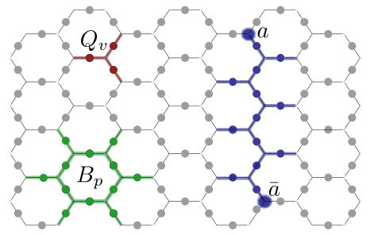
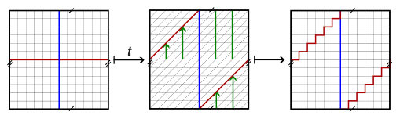
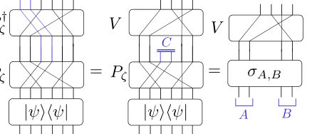
Summary. The paper investigates how mutual information between disjoint regions on a torus can detect long-range nonstabilizerness in topological phases. It provides a complete classification for the Toric Code and shows that while the method is powerful, it has limitations in non-abelian systems. The results also impose fundamental constraints on which logical gates can be implemented fault-tolerantly.
Why it may be interesting. This work is highly relevant to many-body dynamics and quantum information as it provides a new information-theoretic tool to detect non-stabilizer resources in topological phases, which is crucial for understanding the limits of fault-tolerant quantum computing.
Main problem. The paper aims to characterize and detect long-range nonstabilizerness (LRN) in topologically encoded states in 2D, specifically determining if mutual information can serve as a reliable diagnostic tool.
Main result. The authors prove that for the Z2 toric code, non-integer mutual information between non-overlapping regions containing non-contractible loops provides a full classification of LRN, whereas for non-abelian Fibonacci models, the method detects LRN for all but a finite subset of states.
Method. The study uses information-theoretic analysis of mutual information, modular transformations (S and T matrices) of the torus, and entropic uncertainty relations (Maassen-Uffink bound) to relate anyon properties to LRN.
Model / system. The research focuses on 2D topologically ordered systems defined on a torus, specifically the Z2 Toric Code and non-abelian string-net models like the doubled Fibonacci topological order.
Key observables. Mutual information (I), von Neumann entropy, and anyon labels/flux.
Important parameters / regimes. Shallow-depth local quantum circuits (depth O(polylog(L))), thermodynamic limit (N -> infinity), and modular group transformations.
Assumptions / limitations. The system is a regular 2D lattice; regions are sufficiently distant and large enough to encompass Wilson loop operators; the study focuses on minimal-entropy states.
Figures summary. Figure 1 shows Toric Code operators and non-contractible cycles; Figure 2 illustrates spatial regions A and B; Figure 3 shows Wilson loop operator mappings; Figure 4 depicts the string-net lattice; Figure 5 shows a Dehn twist via lattice shear; Figure 6 shows a pictorial derivation of trace equations.
Paper structure. The paper introduces LRN and the problem of 2D detection, establishes a theorem for LRN detection using mutual information, applies this to the Z2 Toric Code for full classification, extends the analysis to non-abelian string-net models, and concludes with implications for fault-tolerant logical gates.
We study long-range nonstabilizerness (LRN), namely the obstruction to remove nonstabilizerness with shallow-depth local quantum circuits. In one-dimensional settings, the mutual information between disconnected spatial regions has proven to be a powerful tool to diagnose LRN. In this work, we focus on encoded states of two-dimensional topologically-ordered systems, and explore the ability of the mutual information to serve as a diagnostic of LRN. Focusing on the concrete setting of lattice models defined on a torus, we show that information about LRN can be gained from the analysis of the mutual information between non-overlapping regions containing non-contractible loops, and of the change of such mutual information under modular real-space transformations. We exemplify this idea in the toric code and the non-abelian string-net model with doubled Fibonacci topological order. In the former case, we show that the mutual information provides a full classification, certifying LRN for all encoded non-stabilizer states. In the latter case, instead, our approach does not lead to a full classification, as it detects LRN for all states except from a finite subset with special transformation properties under the modular group. Finally, we discuss how our results on LRN constrain the logical gates that can be implemented fault-tolerantly on the torus.
Authors: Wenxue Ren, Binghao Li, Ruiqun Niu, Yu Guo, Shuanping Du
Type: theory · Category: quantum information and computing · PDF: https://arxiv.org/pdf/2605.22150v1
Analysis basis: full PDF text, analyzed in chunks
Topic relevance: 🔥 entanglement & information structure 4/5
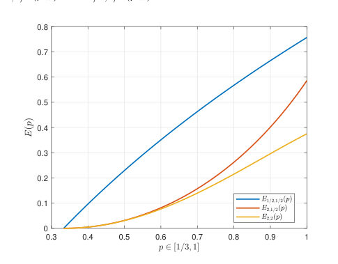
Summary. This paper introduces a generalized framework for entanglement measures based on 'unified entropy,' which encompasses Tsallis and Renyi entropies. It explores the properties of both (q,s) and (r,t) type entanglement, proving their monotonicity and monogamy while identifying specific measures that satisfy tight complete monogamy. The study provides a unified approach to understanding multipartite entanglement distribution.
Why it may be interesting. This work provides a generalized mathematical framework for quantifying entanglement, which is fundamental for understanding entanglement distribution and monogamy in multipartite quantum networks and many-body systems.
Main problem. The paper aims to develop and characterize a unified theory of multipartite entanglement measures using the 'unified entropy' framework, specifically investigating the properties of (q,s) and (r,t) type entropy entanglement.
Main result. The authors prove that (q,s) entropy entanglement is an entanglement monotone and is monogamous, and they identify one specific global multipartite entanglement measure (GlMEM) that is both completely and tightly completely monogamous.
Method. The study employs mathematical frameworks involving the unified entropy definition, partition theory (coarsening relations), LOCC analysis, and the use of Schmidt decomposition and operator convexity.
Model / system. The study focuses on n-partite quantum systems consisting of finite-dimensional Hilbert spaces, specifically analyzing pure and mixed states, including the two-qubit Werner state as a benchmark.
Key observables. Unified entropy entanglement measures (E_{q,s}, E_{r,t}), Global Multipartite Entanglement Measures (GlMEMs), and Genuine Entanglement Measures (GEMs).
Important parameters / regimes. Entropy parameters (q, s, r, t) defining different regimes, such as 0 < r < 1 and q > 1, and the dimension of the subsystems.
Assumptions / limitations. The analysis of mixed states assumes the existence of an optimal decomposition via the convex-roof extension.
Paper structure. The paper introduces the unified entropy framework, defines bipartite and multipartite entanglement measures, establishes monotonicity and monogamy properties for different parameter regimes, compares different types of global measures, and provides analytical proofs for hierarchy violations.
The unified entropy as a promotion of the von Neumann entropy exhibits distinct diversity which contains the Tsallis entropy, the Rényi entropy, the von Neumann entropy as special cases. The unified-($r,t$) entropy entanglement with $0
Authors: S. V. Mousavi
Type: theory · Category: quantum information and computing · PDF: https://arxiv.org/pdf/2605.22293v1
Analysis basis: full PDF text, analyzed in chunks
Topic relevance: entanglement & information structure 3/5 · quantum measurements 3/5 · correlated / nonlocal dissipation 2/5 · methods for driven-dissipative 2/5 · non-equilibrium dynamics 2/5
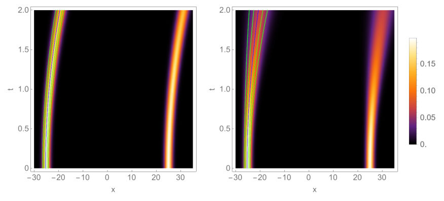
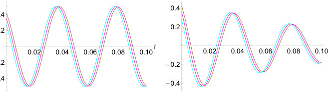
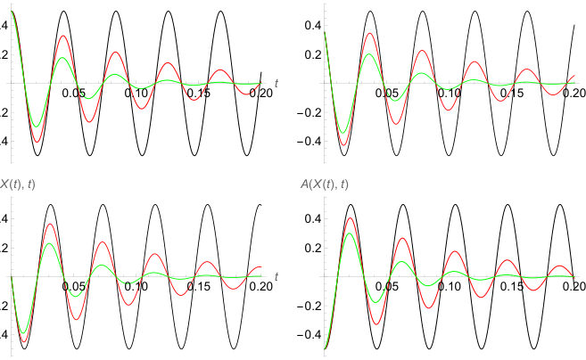
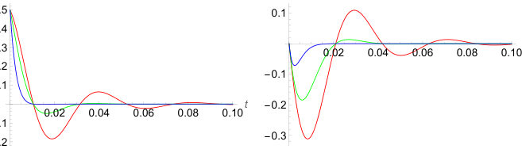
Summary. This paper demonstrates that modular variables can act as sensitive probes for nonlocal phase information in quantum superpositions, even when wave packets are spatially separated and subject to environmental decoherence. While thermal noise reduces the signal amplitude, the phase information remains accessible, unlike with standard local observables. The study highlights the utility of modular operators in detecting quantum features in the presence of dissipation and gravity.
Why it may be interesting. It provides a novel way to access nonlocal phase information in open quantum systems where standard decoherence-related metrics like entanglement or coherence fail, offering a potential probe for gravity-induced effects in the presence of noise.
Main problem. Investigating whether relative phase information in spatially non-overlapping quantum superpositions can be detected using modular variables in the presence of environmental noise and gravity.
Main result. Modular variables remain sensitive to the relative phase even when wave packets do not overlap, whereas standard local quantities and information-theoretic measures like entanglement fail to capture this phase. Thermal noise damps the signal amplitude, but the phase-sensitive structure remains robust.
Method. The study uses the Bohmian mechanics framework to compute local expectation values along particle trajectories and employs the Caldeira-Leggett master equation to model open-system dynamics.
Model / system. Gaussian wave-packet superpositions (single and two-particle systems) subject to a uniform gravitational field and coupled to a common environment modeled by the Caldeira-Leggett equation in the high-temperature limit.
Key observables. Modular operators (modular momentum and translation operators), probability density, probability current, and information-theoretic measures (coherence, entropy, and entanglement).
Important parameters / regimes. Spatial separation (L), gravitational acceleration (g), relaxation rate (gamma), temperature (T), and quantum statistics (Bose-Einstein, Fermi-Dirac, and Maxwell-Boltzmann).
Assumptions / limitations. High-temperature limit, Born-Markov approximation, Ohmic spectral density, and the regime of negligible spatial overlap between wave packets.
Figures summary. Figure 1 compares density plots of unitary vs. dissipative dynamics; Figure 2 shows the time evolution of local modular expectation values; Figure 3 demonstrates phase dependence for different relative phases; Figure 4 shows the impact of temperature and relaxation on two-particle modular signals.
Paper structure. The paper derives the equation of motion for the displacement operator, analyzes Gaussian wave-packet superpositions under unitary and dissipative dynamics, extends the analysis to multi-particle systems with different quantum statistics, and concludes by comparing modular variables to standard local observables.
Modular variables serve as a striking example of quantum nonlocality, particularly in superpositions of wave packets that are spatially well separated, where the relative phase between components cannot be accessed through conventional local measurements. In this work, we explore the time evolution of Hermitian modular operators for Gaussian wave-packet superpositions under the influence of a uniform gravitational field. We consider both unitary dynamics governed by the Schrödinger equation and open-system dynamics described by the Caldeira-Leggett master equation in the high-temperature limit. Adopting the Bohmian interpretation of quantum mechanics, we compute local expectation values of these modular operators along individual particle trajectories. Our analysis shows that gravitational acceleration induces a time-varying modular signal, the expectation value of the modular observable, that remains sensitive to the relative phase between the separated wave packets. In contrast, standard local quantities such as the probability density and probability current, while modified by gravity, become insensitive to the relative phase in the regime of negligible spatial overlap. For a pair of particles coupled to a shared environment, we find that environment-induced correlations can modify the local modular expectation value observed for one particle, yielding a clear signature of environmental influence. However, the transfer of phase sensitivity via environment-generated entanglement to the modular signal of the distant particle remains negligible within the regime considered. We further demonstrate that conventional measures of coherence and entanglement do not capture the relative phase information in this non-overlapping regime.
Authors: Yang Xue, Yue Chang, Tao Shi, Yu-xi Liu
Type: theory · Category: other · PDF: https://arxiv.org/pdf/2605.21889v1
Analysis basis: full PDF text, analyzed in chunks
Topic relevance: Tavis-Cummings & cavity-many-emitter 3/5 · correlated / nonlocal dissipation 3/5 · interference shaping light 2/5 · methods for driven-dissipative 2/5 · quantum measurements 2/5
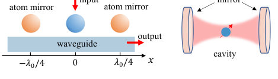
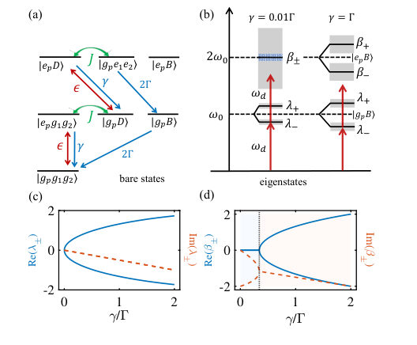
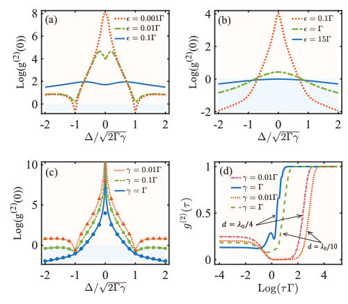
Summary. This paper identifies a new type of photon blockade in waveguide cavity QED that works even in high-loss, weak-coupling environments. The effect is driven by the Quantum Zeno effect rather than traditional strong coupling. This discovery offers a potential pathway for creating robust single-photon devices using existing waveguide QED platforms.
Why it may be interesting. It provides a novel mechanism (Quantum Zeno effect) for photon blockade in dissipative regimes, which is highly relevant for developing robust single-photon sources in open quantum systems and waveguide-based quantum networks.
Main problem. The study investigates the emergence of a photon anomalous blockade in a waveguide cavity QED system, specifically in the 'bad-cavity' regime where conventional blockade mechanisms are absent.
Main result. The authors discover that photon blockade can occur in a high-dissipation, weak-coupling regime due to the Quantum Zeno effect, and that this effect is robust against the position of the medium atom and can be enhanced by using N-atom mirrors.
Method. The researchers utilize both master equation and scattering theories, employing a non-Hermitian effective Hamiltonian and analyzing the system within single- and two-excitation subspaces.
Model / system. A waveguide cavity QED system consisting of a medium atom coupled to two quantized mirror atoms (or N-atom mirrors) within a waveguide, modeled using a Lindblad master equation and a non-Hermitian Hamiltonian.
Key observables. Second-order correlation functions g(2)(0) and g(2)(tau), photon statistics, and the energy spectrum (eigenvalues).
Important parameters / regimes. Decay rates of mirror atoms (Gamma) and medium atom (gamma), detuning (Delta), driving strength (epsilon), and the number of atoms in the mirror (N).
Assumptions / limitations. The analysis assumes a weakly driven probe field and applies the Markovian approximation.
Figures summary. Fig 1 shows the schematic of the waveguide cavity system and a comparison to a Fabry-Perot cavity; Fig 2 illustrates the transition diagram and the energy spectrum of the system.
Paper structure. The paper introduces the waveguide cavity QED setup, develops the theoretical framework using master equations and effective Hamiltonians, analyzes the single- and two-excitation subspaces to identify the blockade mechanism, explores scaling with N-atom mirrors, and discusses experimental feasibility.
Waveguide cavity quantum electrodynamics (QED) with atomic mirrors is a growing research area of quantum optics and can be applied to quantum information processing. We here study the photon statistics of output fields from a waveguide cavity QED system, in which the waveguide is coupled to quantized mirror atoms and one driven medium atom. Our results show that the photon blockade can occur even for a bad atom cavity with large dissipation and small coupling between the medium atom and the cavity, in contrast to the small dissipation and the strong coupling of the medium atom to the cavity field for the conventional photon blockade or the quantum interference for the unconventional photon blockade in the cavity QED system. Utilizing both the master equation and scattering theories, we derive the condition under which the photon blockade occurs in weakly driven systems. We find that such photon anomalous blockade is due to the quantum Zeno effect and is robust against variations of the medium atom's position within the cavity. Our study paves a way to exploit the photon blockade and single-photon devices via the waveguide cavity QED.
Authors: Zixiang Hong, John C. Schotland
Type: theory · Category: quantum information and computing · PDF: https://arxiv.org/pdf/2605.22797v1
Analysis basis: full PDF text, analyzed in chunks
Topic relevance: entanglement & information structure 3/5 · Keldysh / 2PI / non-Gaussian methods 2/5 · Tavis-Cummings & cavity-many-emitter 2/5 · correlated / nonlocal dissipation 2/5 · quantum measurements 2/5
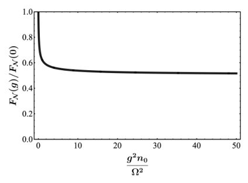
Summary. This paper quantifies how single-photon quantum information is lost when traveling through an atomic medium. It discovers that for certain types of noise, the loss of fidelity follows a universal pattern that remains bounded even at very high coupling strengths. This is significant for understanding the fundamental limits of quantum communication through matter.
Why it may be interesting. It provides a fundamental performance bound for quantum communication through atomic media and identifies a universal behavior for fidelity degradation that is robust against medium disorder.
Main problem. Investigating how the interaction between a single photon and an atomic medium causes information loss and decoherence during transmission.
Main result. The authors establish a universal principle where normalized fidelity for erasure and dephasing channels decreases monotonically with coupling strength but is bounded from below by 1/2, a result that holds for both uniform and disordered media.
Method. The study uses quantum field theory to model the interaction and analyzes the degradation through the lens of specific quantum channels (erasure, dephasing, and depolarization) and Holevo information maximization.
Model / system. A quantized scalar electromagnetic field interacting with a collection of two-level atoms via a Hamiltonian including field, atomic, and interaction terms under the rotating wave approximation.
Key observables. Quantum channel fidelity, normalized fidelity, and channel capacity.
Important parameters / regimes. Atom-photon coupling strength (g), atomic density (n0), atomic resonance frequency (Omega), and photon wavevector (k0).
Assumptions / limitations. The model assumes a scalar field (ignoring polarization), uses the rotating wave approximation, and assumes the quantum channels are independent of the coupling strength's effect on phase.
Figures summary. Figure 1 illustrates the dependence of fidelity on the coupling strength.
Paper structure. The paper introduces the problem of photon transmission loss, defines the Hamiltonian and medium configurations, analyzes specific quantum channels, derives a universal fidelity formula, and discusses the asymptotic limits and implications for information capacity.
We consider the problem of single-photon transmission through an atomic medium, using quantum channel fidelity to describe the resulting information loss. We find that the normalized fidelity decreases monotonically with coupling strength, establishing a performance bound for quantum communication through such media. Our results hold for several channel types and for deterministic and random media.
Authors: J. Kuttruff, L. Möhrle, L. Ciorciaro, L. Schmidt-Mende, P. Baum
Type: both · Category: other · PDF: https://arxiv.org/pdf/2605.22152v1
Analysis basis: full PDF text, analyzed in chunks
Topic relevance: interference shaping light 3/5 · quantum optics experiment 3/5 · non-equilibrium dynamics 2/5 · quantum measurements 2/5
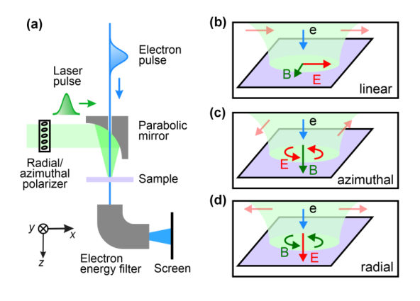
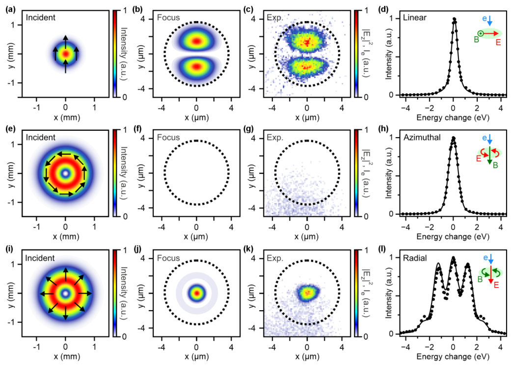
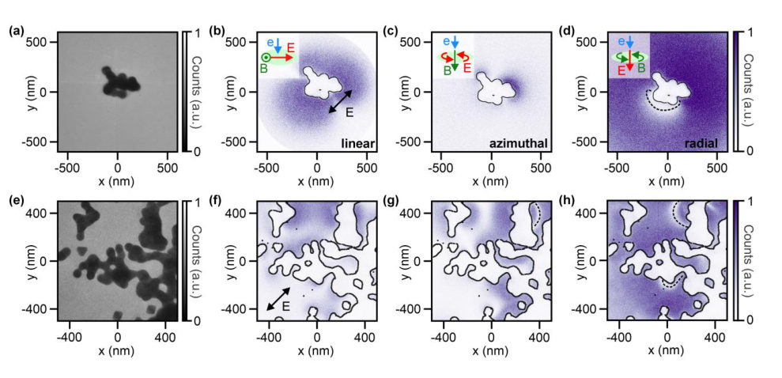
Summary. This paper demonstrates a method to directly couple vectorial laser fields to electron beams using a thin membrane to break symmetry and reveal longitudinal field components. This enables both the coherent modulation of electron energy for attosecond science and high-resolution, sub-diffraction imaging of nanophotonic near-fields in metallic structures.
Why it may be interesting. This work is highly relevant to quantum optics and ultrafast science as it provides a method for the collinear generation of attosecond electron pulses and free-electron qubits using structured light.
Main problem. Achieving direct, collinear, and tilt-free coupling between vectorial laser fields and electron beams to enable ultrafast electron modulation and near-field imaging.
Main result. The researchers demonstrated that longitudinal electric fields from radially polarized light can coherently modulate electron energy and provide sub-diffraction-limit imaging, while azimuthal polarization can probe 3D nanophotonic near-fields in metallic mesocrystals.
Method. The study uses an ultrafast transmission electron microscope integrated with a laser system and liquid-crystal polarizers, combined with Richards-Wolf vectorial diffraction simulations and energy-filtered TEM (EFTEM).
Model / system. The experimental platform consists of a 200 keV electron beam interacting with focused vectorial laser fields (linear, azimuthal, and radial) at a 50-nm SiN membrane, applied to both free electrons and gold nanoparticle mesocrystals.
Key observables. Electron energy spectra (energy gain/loss and sidebands), EFTEM images (real-space energy-filtered intensity), and longitudinal electric/magnetic field distributions.
Important parameters / regimes. 200 keV electron energy, 1030-nm laser wavelength, 250-fs pulse duration, 50-nm SiN membrane thickness, and sub-diffraction-limit spot sizes.
Assumptions / limitations. The interaction is modeled using a coherent interaction model where electron energy modulation is proportional to the squared amplitude of the longitudinal electric field.
Figures summary. Fig 1 shows the experimental setup and polarization-dependent field structures; Fig 2 compares simulated and measured electron energy spectra and EFTEM images; Fig 3 demonstrates the application to gold nanoparticle mesocrystals using various polarization states.
Paper structure. The paper introduces the problem of electron-light coupling, describes the experimental setup and polarization shaping, presents the fundamental demonstration of electron modulation with radial polarization, and extends the technique to imaging complex metallic mesostructures.
Controlled interaction of laser light with electron beams is fundamental for ultrafast electron microscopy and electron-based quantum optics, yet their direct coupling is forbidden in free space. Here we use longitudinally polarized light at a thin membrane and show that the emerging focal fields can modulate the electron beam in a direct, coherent and linear way, without the need for nanostructured materials or slanted interaction geometries. Also, we use vectorial polarizations to excite and probe three-dimensional nanophotonic near-fields in metallic mesocrystals by coherent electron energy gain and loss. We find that longitudinal electric fields excite axial near-fields in a direct way while longitudinal magnetic fields excite oscillating ring currents via azimuthal electric fields. These possibilities enable tilt-free, collinear generation of attosecond electron pulses or free-electron qubits and provide novel imaging modes in ultrafast electron microscopy and metamaterial tomography.
Authors: Robert Meiners Fuchs, Marten Richter
Type: theory · Category: other · PDF: https://arxiv.org/pdf/2605.22153v1
Analysis basis: full PDF text, analyzed in chunks
Topic relevance: correlated / nonlocal dissipation 3/5 · methods for driven-dissipative 3/5 · Tavis-Cummings & cavity-many-emitter 2/5 · interference shaping light 2/5
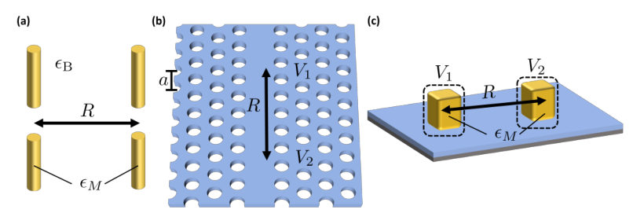
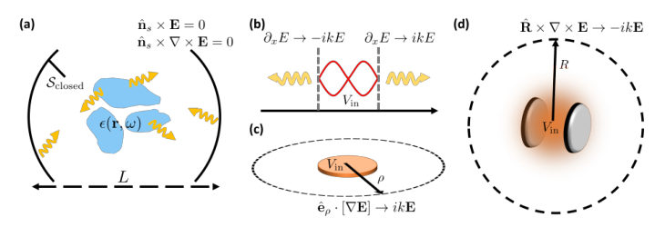
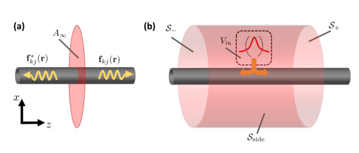
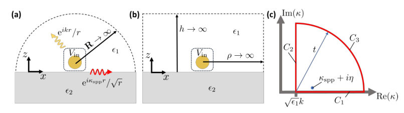
Summary. This paper develops a rigorous theory for quantizing light in complex, lossy nanostructures like waveguides and surfaces. It provides a way to calculate how cavities and quantum emitters interact with each other and with propagating photons. This is crucial for the accurate simulation of integrated quantum optical devices.
Why it may be interesting. It provides a rigorous mathematical foundation for simulating open quantum system dynamics in realistic, lossy nanophotonic architectures, which is essential for designing integrated quantum photonic devices.
Main problem. The lack of a rigorous quantization framework for quasinormal modes (QNMs) in complex, lossy, and structured lightguiding environments like waveguides and surfaces.
Main result. A generalized quantization scheme and derivation of boundary conditions for QNMs that accounts for structured backgrounds, including a system-bath Hamiltonian with rigorously defined coupling elements.
Method. The authors use the electromagnetic Green's function, Green's second identity, and a regularization scheme to transform diverging QNM fields into regularized, computable forms.
Model / system. Multiple interacting QNM cavities (e.g., metal dimers or photonic crystal cavities) coupled to quantum emitters and a non-bosonic bath of propagating photons in waveguides, surfaces, or 3D media.
Key observables. Complex eigenfrequencies, coupling elements, system-bath correlation functions, and QNM overlap matrices (intracavity and intercavity).
Important parameters / regimes. Complex eigenfrequencies (decay rates), separation parameter (distance between cavities), transfer factor (power transfer between cavities), and group velocity.
Assumptions / limitations. The medium is assumed to be absorptive, isotropic, inhomogeneous, and non-magnetic; the far-field divergence is addressed via a few-mode regularization approximation.
Figures summary. Figure 1 shows examples of coupled cavities in different environments (dimers, waveguides, surfaces); Figure 4 illustrates a cavity near a planar interface; Figure 5 demonstrates the decoupling of multiple waveguides.
Paper structure. The paper begins by deriving general boundary conditions for QNMs, extends these to specific geometries (1D, 2D, 3D, and waveguides), presents a quantization scheme for the system-bath Hamiltonian, and concludes with the calculation of overlap integrals and intercavity coupling.
Open optical or plasmonic resonators are placed on and connected through surfaces or via waveguides, forming complex lightguiding nanostructures, e.g. for integrated photonic quantum devices. We derive general boundary conditions for quasinormal modes that account for the structure's specific geometry. We then present a general quantization scheme for multiple, interacting quasinormal-mode cavities coupled to quantum emitters and to a non-bosonic bath of propagating photons on waveguides or a surface. We derive a system-bath Hamiltonian with rigorously defined coupling elements that can be computed using Maxwell solvers, including light-matter coupling between the electromagnetic field and quantum emitters. We define system-bath correlation functions for an effective, bath-mediated, and time-delayed interaction between the quasinormal modes and quantum emitters, which is a main ingredient commonly used to simulate open quantum system dynamics.
Authors: Tsendsuren Khurelbaatar, R. T. Sang, Igor Litvinyuk
Type: theory · Category: other · PDF: https://arxiv.org/pdf/2605.21925v1
Analysis basis: full PDF text, analyzed in chunks
Topic relevance: Keldysh / 2PI / non-Gaussian methods 3/5 · methods for driven-dissipative 2/5 · non-equilibrium dynamics 2/5 · quantum measurements 2/5
Summary. This paper investigates how squeezed light can be used to control and certify quantum fluctuations in high-harmonic generation. It identifies a specific observable—the variance of the HHG cutoff—that acts as a self-calibrating witness for nonclassicality, even in uncertain nanoscale environments. The study reveals that amplitude squeezing can push these fluctuations below the standard quantum limit.
Why it may be interesting. It bridges quantum optics and strong-field physics by showing how quadrature-specific noise redistribution can be mapped onto macroscopic spectral observables, offering a way to detect nonclassicality without complex homodyne detection.
Main problem. Determining how quantum fluctuations from squeezed-light drivers manifest in macroscopic high-harmonic generation (HHG) observables and identifying a robust 'Heisenberg witness' to certify nonclassicality in nanoscale geometries.
Main result. The authors demonstrate that amplitude squeezing suppresses the shot-to-shot variance of the HHG cutoff below the standard quantum limit, providing a self-calibrating witness that is independent of the absolute vacuum-field amplitude.
Method. A Wigner phase-space approach is used to map the quantum-optical driver onto a stochastic ensemble of time-dependent Schrodinger equation (TDSE) realizations, supplemented by analytical cumulant expansions and ADK theory.
Model / system. A 1D model atom (Argon) driven by a single-mode Gaussian squeezed coherent state in a nanoscale interaction regime where vacuum-field amplitude is significantly elevated.
Key observables. HHG cutoff position, HHG cutoff variance, and the normalized cutoff variance ratio relative to the Standard Quantum Limit (SQL).
Important parameters / regimes. Squeezing parameter (r), squeezing angle (theta), vacuum-to-driver amplitude ratio (~10^-2), and the Keldysh parameter (gamma < 0.5).
Assumptions / limitations. The analysis is restricted to a single-mode Gaussian framework and assumes an undepleted driving field and coherent phase locking.
Figures summary. Figure 1 shows Wigner distributions and time-domain field realizations for coherent, amplitude-squeezed, and phase-squeezed states; Figure 4 illustrates the dependence of the mean cutoff and variance on the squeezing angle and parameter.
Paper structure. The paper introduces the problem of quantum-to-classical mapping in HHG, describes the Wigner-based stochastic TDSE method, presents analytical derivations for cutoff fluctuations, and concludes with the identification of a robust Heisenberg witness.
Strong-field high-harmonic generation (HHG) is conventionally described semiclassically, with the driving laser treated as a classical field. This approximation becomes insufficient in nanoscale interaction geometries, where extreme spatial confinement raises the vacuum-field amplitude to the ~10^-2 level relative to the driving-field amplitude. When the quantum fluctuations of the driving field are redistributed between conjugate quadratures by squeezing, they can be directly imprinted onto macroscopic HHG observables. To model this interaction, we employ a Wigner phase-space approach that maps the quantum-optical driver onto a stochastic ensemble of time-dependent Schrodinger equation realizations. Although each realization remains classically simulable, the sub-vacuum quadrature covariance structure of squeezed states cannot be reproduced by any field admitting a non-negative Glauber-Sudarshan P-representation. Within this single-mode Gaussian framework, we show that amplitude squeezing suppresses the shot-to-shot variance of the HHG cutoff below the standard quantum limit (SQL). To leading order in the vacuum-to-driver ratio, the normalized cutoff variance decays exponentially with the squeezing parameter, independent of the absolute vacuum-field amplitude and therefore robust against uncertainties in the effective nanoscale mode volume. A subleading phase-noise contribution from the anti-squeezed quadrature produces a variance minimum near r_opt ~ 1.6, providing a concrete experimental target. These results establish the HHG cutoff variance ratio as a nonlinear, self-calibrating Heisenberg witness in which sub-SQL scaling directly reflects the redistribution of quantum uncertainty in the driving field.
Authors: Sheng Zhao, Peng-Bo Li
Type: theory · Category: quantum information and computing · PDF: https://arxiv.org/pdf/2605.21942v1
Analysis basis: full PDF text, analyzed in chunks
Topic relevance: Tavis-Cummings & cavity-many-emitter 3/5 · methods for driven-dissipative 2/5 · non-equilibrium dynamics 2/5 · spintronics-quantum-optics interface 2/5
Summary. This paper introduces a photon blockade mechanism based on three-body interactions between a bosonic mode and two qubits. This approach overcomes the traditional trade-off between photon purity and brightness, providing a robust method for generating high-quality single photons. The mechanism is applicable across various platforms, including superconducting circuits, magnonics, and optomechanics.
Why it may be interesting. It provides a novel way to bypass fundamental limits in quantum optics and circuit QED, offering a path toward high-performance single-photon sources that are robust to experimental imperfections like thermal noise and strong driving.
Main problem. Existing photon blockade mechanisms, such as conventional and unconventional photon blockade, suffer from a fundamental trade-off where increasing brightness leads to decreased single-photon purity.
Main result. The authors propose a new photon blockade mechanism using three-body interactions that breaks the purity-brightness trade-off, enabling simultaneous high purity and high brightness while remaining robust against thermal noise.
Method. The study uses the Lindblad master equation to model system dynamics and employs the QuTiP package for numerical steady-state simulations, supplemented by analytical solutions in the two-photon subspace.
Model / system. A hybrid quantum system consisting of a single bosonic mode (photonic, magnonic, or phononic) coupled to two qubits via a three-body interaction term $J(a^\dagger \sigma^+_1 \sigma^-_2 + a \sigma^-_1 \sigma^+_2)$.
Key observables. Second-order correlation function $g^{(2)}(0)$ (purity) and average photon number $N$ (brightness).
Important parameters / regimes. Coupling strength $J$ relative to decay rate $\kappa$, driving Rabi frequency $\Omega$, detuning $\Delta$, and thermal occupation $n_{th}$.
Assumptions / limitations. The mechanism is presented within the context of a microwave photonic platform, though the authors assert its universality to other bosonic modes.
Figures summary. Figure 2 shows color maps of $g^{(2)}(0)$ and plots of $\log_{10} g^{(2)}(0)$ and $\log_{10} N$ as functions of detuning and coupling strength.
Paper structure. The paper introduces the problem of the purity-brightness trade-off, presents the three-body interaction model, provides analytical and numerical results demonstrating the breaking of the trade-off, discusses robustness against noise and driving strength, and concludes with applications to microwave platforms.
Photon blockade is vital for single-photon generation, but current schemes with conventional and unconventional photon blockade face critical limitations like the purity-brightness trade-off, hindering the generation of high-performance single-photons. To overcome these limitations, we introduce a fundamentally new photon blockade mechanism by utilizing three-body interactions between a single photonic mode and two qubits. This kind of interaction intrinsically cuts off the excitation path to the two-photon state, resulting in a perfect photon blockade effect. The mechanism operates across a broad parameter range, free from the constraints of strong coupling or weak driving. Remarkably, it breaks the purity-brightness trade-off, enabling the simultaneous achievement of extreme purity and high brightness, both significantly outperforming previous mechanisms. Furthermore, this approach demonstrates robustness against thermal noise and avoids unwanted oscillations in the time-delayed correlation function. This work provides a path for generating high-purity, high-brightness, and robust single-photon sources, a key resource for quantum technologies.
Authors: P. L. Krapivsky
Type: theory · Category: statistical mechanics · PDF: https://arxiv.org/pdf/2605.22383v1
Analysis basis: full PDF text, analyzed in chunks
Topic relevance: non-equilibrium dynamics 3/5 · driven-dissipative phase transition 2/5 · non-equilibrium universality 2/5
Summary. This paper provides a comprehensive analysis of aggregation-fragmentation models where detailed balance is broken. It characterizes the transition from stable nonequilibrium steady states to an explosive shattering regime where mass is lost to zero-mass particles.
Why it may be interesting. not directly relevant
Main problem. The study investigates aggregation-fragmentation processes where the detailed balance condition is broken, specifically focusing on the properties of nonequilibrium steady states and the emergence of shattering transitions.
Main result. The paper identifies that for fragmentation rates scaling as mass^beta, a steady state exists for beta >= 0, while beta < 0 leads to an instantaneous shattering transition into 'dust'. It also provides exact solutions for the beta=1 case and asymptotic behaviors for the mass distribution tails.
Method. The author employs integro-differential equations, Laplace transforms, moment analysis, and asymptotic analysis to solve the master equations and determine the scaling properties of the cluster density.
Model / system. A continuous-mass aggregation-fragmentation model in a mean-field, well-mixed system where clusters merge at a mass-independent rate and fragment at rates scaling with mass as x^beta.
Key observables. Cluster mass distribution c(x, t), total cluster density N(t), and the n-th moments of the mass distribution M_n(t).
Important parameters / regimes. The fragmentation scaling exponent beta, the fragmentation rate ratio lambda, and the splitting parameter r for deterministic models.
Assumptions / limitations. The system is treated using a mean-field approach assuming a well-mixed system; aggregation rates are assumed to be mass-independent.
Figures summary. Figure 2 illustrates the evolution of mass density for different negative values of beta, showing the decay of mass due to shattering.
Paper structure. The paper begins with the investigation of random splitting models, moves to deterministic splitting models, analyzes the scaling regimes for beta >= 0, and concludes with the study of the shattering transition and mass loss for beta < 0.
We study aggregation-fragmentation processes in which pairs of clusters can aggregate, and each cluster can break into two fragments. If the rates of aggregation and fragmentation do not depend on the masses, detailed balance does not hold, but nonequilibrium steady states can still be deduced from an exact solution for the Laplace transform. For models in which aggregation rates remain constant but fragmentation rates scale as $(\text{mass})^β$, detailed balance holds only when $β=1$. Away from this solvable case, we employ asymptotic techniques and show that when $β\geq 0$, the steady states share similarities with those from the mass-independent ($β=0$) model. An instantaneous shattering transition with continuous mass loss occurs when $β<0$.
Authors: V. Varrica, G. Gemme, F. M. D. Pellegrino, E. Paladino, M. Sassetti, D. Ferraro
Type: theory · Category: quantum information and computing · PDF: https://arxiv.org/pdf/2605.22582v1
Analysis basis: full PDF text, analyzed in chunks
Topic relevance: Tavis-Cummings & cavity-many-emitter 3/5 · Dicke superradiance 2/5 · non-equilibrium dynamics 2/5
Summary. This paper proposes a solid-state quantum battery using graphene-based Josephson junctions coupled to an LC resonator. It demonstrates that the presence of longitudinal coupling terms can be leveraged to enhance energy storage efficiency under specific resonance conditions. The study also compares different methods for charging the battery, such as modulating coupling strength versus tuning the superconducting phase.
Why it may be interesting. It explores how unconventional, non-Dicke interaction terms and non-identical two-level systems influence the performance of a quantum battery, which is highly relevant to open quantum systems and quantum thermodynamics.
Main problem. Investigating the charging dynamics and energy storage efficiency of a solid-state quantum battery based on two-dimensional material-based Josephson junctions.
Main result. The study finds that longitudinal interaction terms, absent in the standard Dicke model, can enhance energy storage during two-photon resonance but act as a disturbance during single-photon resonance.
Method. Numerical diagonalization of the total Hamiltonian and perturbative analysis of the interaction picture to evaluate energy evolution and resonance conditions.
Model / system. A superconducting ring with a graphene-based Josephson junction (GJJ) inductively coupled to an LC resonator, where Andreev bound states act as non-identical two-level systems.
Key observables. Stored energy E_B(t), energy storage capacity C_B(phi), and charging power.
Important parameters / regimes. Coupling strength g, superconducting phase difference phi, transmission probability tau, and resonator frequency omega_r.
Assumptions / limitations. Short junction limit (L << xi), projection into the low-energy subspace of Andreev bound states, and use of a sudden quench protocol for charging.
Figures summary. Figure 1 shows the device schematic; Figure 2 illustrates the graphene junction and Andreev level splitting; Figure 9 compares different charging protocols.
Paper structure. The paper introduces the device architecture, defines the Hamiltonian and interaction terms, analyzes the impact of longitudinal coupling on single- and two-photon resonances, compares different charging protocols, and evaluates the role of energy distribution across channels.
We investigate the solid-state implementation of a Dicke-like quantum battery consisting of a two-dimensional material-based Josephson junction inductively coupled to a resonator, using graphene as a representative example. In this configuration, Andreev bound states naturally act as non-interacting, energetically non-degenerate two-level systems, and the setup allows for both single-photon and two-photon resonant processes. The coupling between the LC-circuit flux and the supercurrent through the junction gives rise to peculiar longitudinal interaction terms that have no counterpart in the conventional Dicke model. These additional couplings can enhance energy storage for a proper range of parameters. The proposed architecture also enables an alternative, but equivalent, charging protocol that relies on tuning the superconducting phase difference across the junction.
Authors: Sonu Jana, Dhruv Baheti, Paul Grossiord, Fabien Bretenaker, Nadia Belabas, Syamsundar De
Type: theory · Category: quantum information and computing · PDF: https://arxiv.org/pdf/2605.22029v1
Analysis basis: full PDF text, analyzed in chunks
Topic relevance: quantum measurements 3/5 · interference shaping light 2/5 · methods for driven-dissipative 2/5
Summary. This paper establishes a unified theoretical framework to predict the phase sensitivity of SU(1,1) interferometers for any arbitrary input state. It identifies how different gain and detection configurations can be optimized to mitigate the degrading effects of internal and external optical losses. The findings provide a roadmap for achieving optimal quantum-enhanced sensing in practical, noisy environments.
Why it may be interesting. This work is highly relevant to quantum optics and open quantum systems as it provides a rigorous tool for designing loss-resilient quantum-enhanced sensors and understanding the interplay between amplification, squeezing, and decoherence.
Main problem. Developing a generalized theoretical framework to evaluate the phase sensitivity of SU(1,1) interferometers using arbitrary two-mode input states and various homodyne detection schemes under the influence of internal and external losses.
Main result. The study provides a comprehensive analytical formulation showing that dark-fringe operation is more robust to external losses and identifies that single-port detection with balanced gains is highly robust to internal losses. It also proves that for certain inputs, the full SU(1,1) interferometer is equivalent to the truncated version under joint homodyne detection.
Method. The authors use a Heisenberg representation and Bogoliubov-type transformations to propagate field operators through the interferometer, deriving analytical expressions for quadrature variances and signal derivatives.
Model / system. The system consists of SU(1,1) interferometers (both full two-amplifier and truncated single-amplifier configurations) utilizing optical parametric amplifiers (PAs) and subject to models of internal and external optical losses.
Key observables. Field quadrature operators (X and Y), single-port homodyne detection outputs, and joint homodyne detection outputs (sum and difference of photocurrents).
Important parameters / regimes. Parametric amplifier gains (G, g), phase shift (phi), internal loss coefficients (L), external loss coefficients (l), and input state statistics (e.g., coherent state amplitude alpha).
Assumptions / limitations. Lossy modes are assumed to be initialized in the vacuum state; the analysis focuses specifically on homodyne detection rather than photon-counting.
Figures summary. Figure 1 shows the schematics of full, truncated, and lossy SU(1,1) interferometers and different detection schemes. Figure 2 compares phase sensitivity across different phase biases. Figure 5 provides a color-coded map of optimal configurations based on loss levels. Figure 6 illustrates sensitivity variation as a function of external losses for different detection ports.
Paper structure. The paper begins with a general derivation of interferometer transformations, followed by the evolution of field quadratures and statistical moments. It then evaluates sensitivity at bright and dark fringes, compares different gain regimes and detection strategies, and concludes with a specific application to coherent state inputs and a summary of optimal configurations under loss.
We provide a general theoretical derivation of the phase sensitivity achieved by SU(1,1) interferometers under homodyne detection. The general expressions obtained accommodate arbitrary input states and include internal and external losses. In this systematic review, both full SU(1,1) interferometers with two parametric amplifiers and the truncated interferometers with only one parametric amplifier are examined. We investigate scenarios involving both single-output ports and joint homodyne detection, and consider parametric amplifiers with equal gains or with a boosted gain second amplifier. Our analytical formulation provides physical insight and understanding of the improvements in the sensitivity, which are shown to originate from noise reduction and/or signal amplification, depending on the configurations and practical implementations. Surprisingly, the configuration with single-output mode detection and parametric amplifiers with equal gains exhibits the highest robustness to very high internal losses. We finally apply this framework to a ubiquitous $|α,0\rangle$ input two-mode coherent probe state. This approach permits the comparison of different strategies and the optimization of the interferometer performance in the presence of losses. In particular, we determine which amplification and detection configurations provide the best performance, depending on the level of losses. This exemplifies how this general analytical approach provides a powerful tool to design quantum-enhanced interferometers and achieve optimal sensitivity with selected probe states and homodyne detection.
← Index · ← Previous · Next →